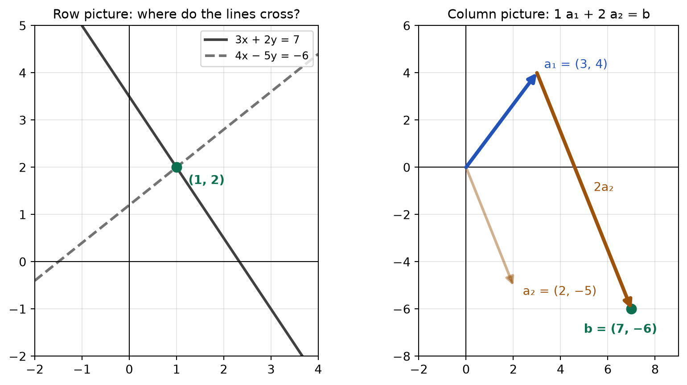

Show the code for this figure
import numpy as np
import matplotlib.pyplot as plt
blue, orange, green = "#2153b8", "#9c5208", "#0a7050"
a1, a2, b = np.array([3, 4]), np.array([2, -5]), np.array([7, -6])
x, y = 1, 2
fig, (L, R) = plt.subplots(1, 2, figsize=(9, 4.6))
# Row picture: one line per equation
t = np.linspace(-2, 4, 2)
# grey lines, so that blue and orange can mean "x" and "y" in the column picture
L.plot(t, (7 - 3 * t) / 2, color="0.25", lw=2.2, label="3x + 2y = 7")
L.plot(t, (4 * t + 6) / 5, color="0.45", lw=2.2, ls="--", label="4x − 5y = −6")
L.plot(x, y, "o", color=green, ms=8)
L.annotate("(1, 2)", (x, y), xytext=(10, -14), textcoords="offset points", color=green, fontweight="bold")
L.set_xlim(-2, 4); L.set_ylim(-2, 5)
L.set_title("Row picture: where do the lines cross?", fontsize=11)
L.legend(loc="upper right", fontsize=9)
# Column picture: one arrow per column, then the path to b
def arrow(ax, p, q, colour, lw=2.2, alpha=1.0):
ax.annotate("", xy=q, xytext=p, arrowprops=dict(arrowstyle="-|>", color=colour, lw=lw,
alpha=alpha, mutation_scale=14, shrinkA=0, shrinkB=0))
O = np.zeros(2)
arrow(R, O, a2, orange, alpha=0.45)
R.annotate("a₂ = (2, −5)", a2, xytext=(8, -8), textcoords="offset points", color=orange)
arrow(R, O, x * a1, blue, lw=3)
R.annotate("a₁ = (3, 4)", a1, xytext=(6, 4), textcoords="offset points", color=blue)
arrow(R, x * a1, x * a1 + y * a2, orange, lw=3)
R.annotate("2a₂", x * a1 + 0.5 * y * a2, xytext=(8, 0), textcoords="offset points", color=orange)
R.plot(*b, "o", color=green, ms=8)
R.annotate("b = (7, −6)", b, xytext=(-40, -20), textcoords="offset points", color=green, fontweight="bold")
R.set_xlim(-2, 9); R.set_ylim(-8, 6)
R.set_title("Column picture: 1 a₁ + 2 a₂ = b", fontsize=11)
for ax in (L, R):
ax.axhline(0, color="black", lw=0.8); ax.axvline(0, color="black", lw=0.8)
ax.set_aspect("equal"); ax.grid(alpha=0.3)
plt.tight_layout()
plt.show()